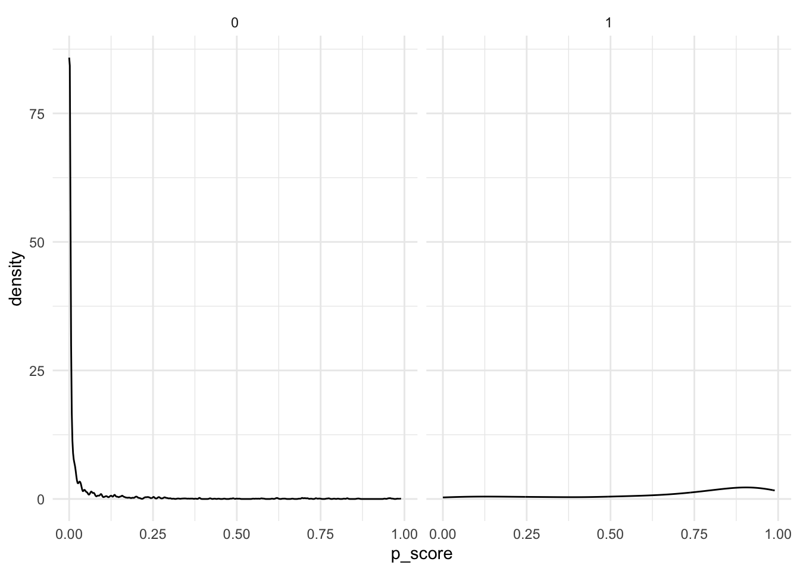
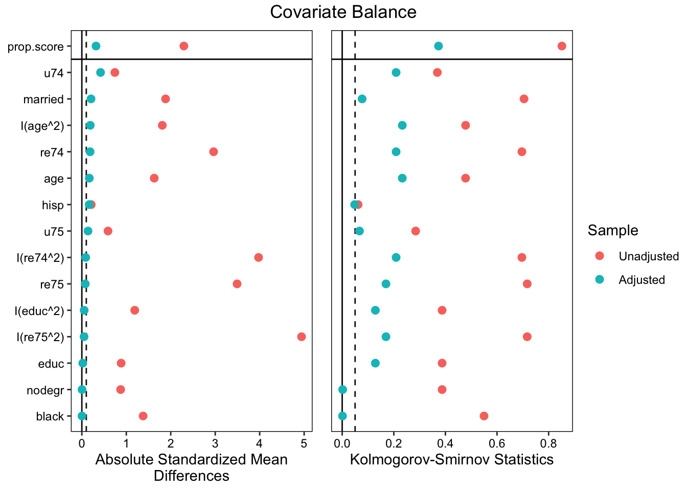

By raw comparisons of the treatment and control means, It appears to affect 1978 income by ~$886.30
Now look at the observational data (for all exercises from now on). How large is the raw difference in 1978 income between the treatment group and the PSID comparison group?
Regression says the effect of the program on 1978 income is a ~$2462.38 decrease with no quadratic terms in the formula, and a $1949.14 decrease with quadratic terms included in the formula.
7.1.3
Begin by exact matching on all the dummy variables. How many treated cases cannot be matched?
exact_match <-matchit(treat ~ married + nodegr + black + hisp + age + educ + re74 + re75 + u74 + u75, data = d, method ="exact", estimand ="ATT")summary(exact_match)[[2]]
Control Treated
All (ESS) 2213.000000 297
All 2213.000000 297
Matched (ESS) 3.056604 9
Matched 5.000000 9
Unmatched 2208.000000 288
Discarded 0.000000 0
When matching over treatment on all available variables, 2208 samples from control could not be matched, and 288 samples from treatment could not be matched.
The (feasible sample) average treatment effect among the treated, based on the exact match group, is a ~$3740.54 increase in 1978 income.
7.1.4
Use the observational data to estimate each case’s propensity to receive treatment using glm(). Use a logistic regression with quadratic terms for age, education, 1974 income, and 1975 income. Spend a few moments thinking about what this model says.
prop_obs <-glm(form_treat_all, data = d, family ="binomial")summary(prop_obs)
Call:
glm(formula = form_treat_all, family = "binomial", data = d)
Coefficients:
Estimate Std. Error z value Pr(>|z|)
(Intercept) -4.0860109 2.0931327 -1.952 0.050926 .
married -2.0307420 0.2332962 -8.705 < 2e-16 ***
nodegr 0.0177758 0.3420739 0.052 0.958557
black 1.9621150 0.2719006 7.216 5.34e-13 ***
hisp 2.4117400 0.4512282 5.345 9.05e-08 ***
age 0.0885744 0.0972988 0.910 0.362647
I(age^2) -0.0029497 0.0014994 -1.967 0.049147 *
educ 0.8446841 0.3120974 2.706 0.006800 **
I(educ^2) -0.0468130 0.0162233 -2.886 0.003908 **
re74 -0.0560163 0.0511241 -1.096 0.273214
I(re74^2) 0.0012223 0.0016798 0.728 0.466828
re75 -0.1544280 0.0418499 -3.690 0.000224 ***
I(re75^2) 0.0004442 0.0012405 0.358 0.720281
u74 2.3537938 0.4966435 4.739 2.14e-06 ***
u75 -1.2273787 0.4540319 -2.703 0.006866 **
---
Signif. codes: 0 '***' 0.001 '**' 0.01 '*' 0.05 '.' 0.1 ' ' 1
(Dispersion parameter for binomial family taken to be 1)
Null deviance: 1825.16 on 2509 degrees of freedom
Residual deviance: 610.11 on 2495 degrees of freedom
AIC: 640.11
Number of Fisher Scoring iterations: 9
Look at the density plots of the p-score for treated and untreated groups.
d <- d |>mutate(p_score =predict(prop_obs, data = d, type ="response"))d |>ggplot(aes(x = p_score)) +geom_density() +facet_wrap(~treat) +theme_minimal()

7.1.5
Estimate propensity scores and ATT weights using weightit(). Ignore the warning you get. We’ll discuss that more in class. Estimate the ATT. Check for covariate balance.
prop_weights <-weightit(as.formula(form_treat_all), data = d, method ="ps", estimand ="ATT")
Warning: Some extreme weights were generated. Examine them with `summary()` and
maybe trim them with `trim()`.
summary(prop_weights)
Summary of weights
- Weight ranges:
Min Max
treated 1 || 1.0000
control 0 |---------------------------| 83.9742
- Units with the 5 most extreme weights by group:
2219 2218 2217 2216 2214
treated 1 1 1 1 1
1485 1484 1478 56 1521
control 22.7435 22.7435 27.3148 48.3254 83.9742
- Weight statistics:
Coef of Var MAD Entropy # Zeros
treated 0.000 0.000 -0.000 0
control 12.211 1.732 3.841 0
- Effective Sample Sizes:
Control Treated
Unweighted 2213. 297
Weighted 14.75 297
love_plot(prop_weights)

prop_w_m <-lm(re78 ~ treat, data = d, weights = prop_weights$weights)summary(prop_w_m)
Call:
lm(formula = re78 ~ treat, data = d, weights = prop_weights$weights)
Weighted Residuals:
Min 1Q Median 3Q Max
-24.136 0.086 0.418 1.226 54.332
Coefficients:
Estimate Std. Error t value Pr(>|t|)
(Intercept) 4.8371 0.1714 28.229 < 2e-16 ***
treat 1.1393 0.2682 4.248 2.23e-05 ***
---
Signif. codes: 0 '***' 0.001 '**' 0.01 '*' 0.05 '.' 0.1 ' ' 1
Residual standard error: 3.555 on 2508 degrees of freedom
Multiple R-squared: 0.007144, Adjusted R-squared: 0.006748
F-statistic: 18.05 on 1 and 2508 DF, p-value: 2.234e-05
With weighting, ATT is a ~$1139.30 increase in 1978 income.
Based on Love plot, covariates are partially balanced after weighting.
7.1.6
Now do the same as above using “entropy balancing.”